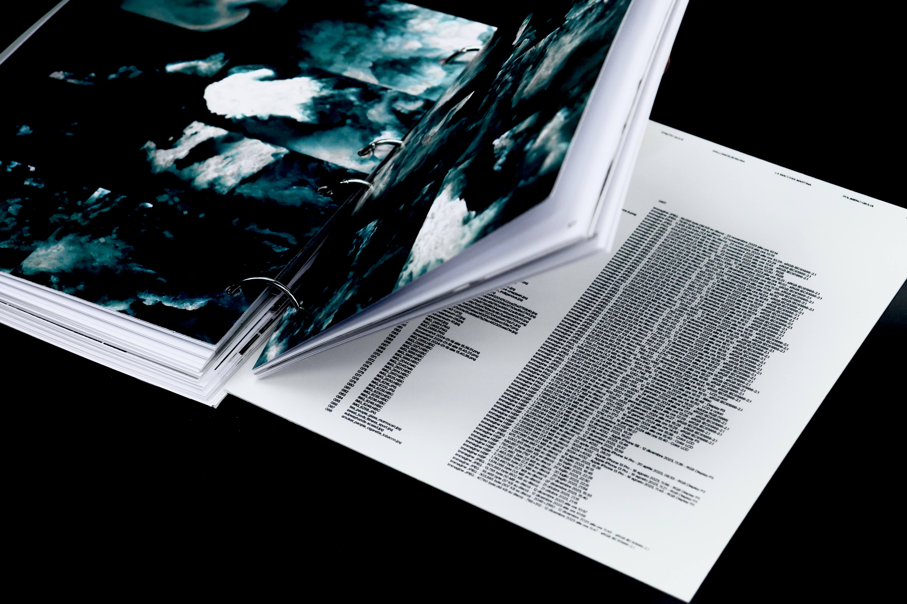
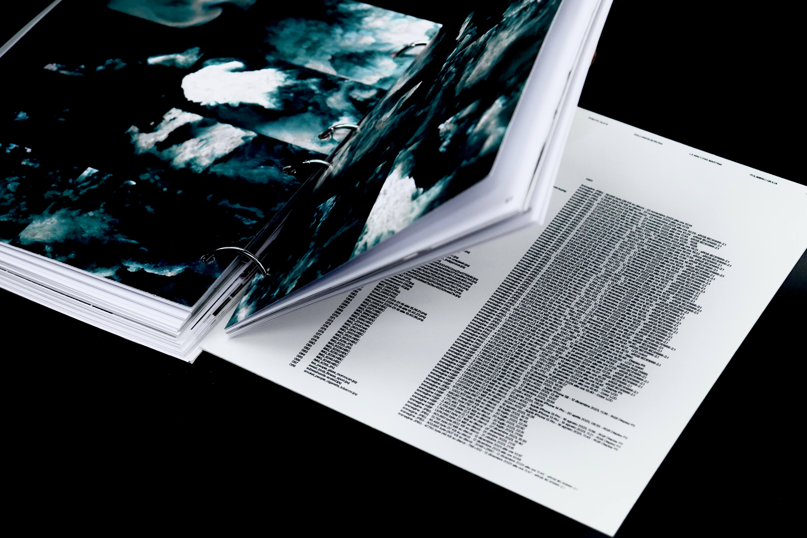

With the rise of the web and digitalization, image archives, once simple repositories of memories and moments, have transformed into full-fledged datasets. Thus, the image becomes data. This is the inspiration behind .img: The Persistence of the Ephemeral, from Images to Data. The goal is to highlight the role that digital images have: not just as mere representations, but as carriers of memories and data. The .img suffix evokes a file extension format and, in this case, represents how images become extensions of memory.
The subtitle The Persistence of the Ephemeral raises a paradox: images allow us to make fleeting moments permanent, capturing them as indelible and lasting data.
At the same time, digital images reveal themselves to be surprisingly fragile and ephemeral, subject to the inevitable obsolescence of technology and the volatility of the media on which they are stored.
The choice of a printed format is both a conceptual and stylistic decision: to return the digital image to the analog, reversing the process of digitalization without forgetting the trace that images leave behind: the metadata.